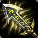

Lucian "Der Läuterer"

Lucian ist ein sehr simpler Champion der auf der Bot-Lane gespielt wird. Durch seine Passive "Lichtschütze" kann er nachdem er eine Fähigkeit aktiviert hat, zwei automatische Angriffe hintereinander machen, aber der zweite Angriff macht etwas weniger Schaden. Er hat dadurch schon von Anfang an eine sehr gute Schadenquelle. Er kann dadurch auch gut Farmen und seine Gegner angreifen. Lucian ist am anfang schon sehr stark und wird im späteren Verlauf des Spiels noch viel stärker
Wenn man gegen Lucian spiel ist es vorteilhaft Massenkontrolleffekte zu haben, damit er nicht entkommen kann. In der Anfangsphase ist es auch sehr wichtig ihn am Farmen zu hindern, aber das ist eigentlich bei jedem ADC so. Man sollte es vemeiden ihn alleine anzugreifen wenn man einen Champion spielt der von sich aus nicht viel Leben hat, weil er durch seine Passive "Lichtschütze" einfach zu viel Schaden macht.
Was macht Lucian so stark?
Lucians hauptsächliche Stärke kommt durch seine Passive. Er hat daruch die möglichkeit in kurzer Zeit viel mehr Schaden zu verursachen als manche andere ADCs. Das bedeutet aber nicht das seine Fähigkeiten dagegen schwach sind. Seine anderen Fähigkeiten machen auch einen sehr guten Schaden und werden durch seine Passive noch mal unterstützt.
Eine andere Sache die Lucian so stark macht ist seine Mobilität. Mit seiner E-Fähigkeit "Erbarmungslose Verfolgung" (Er kann einen kurzen Slide in eine beliebige Richtung machen) kann er seinen Gegner immer hinterher kommen, weil die Abklingzeit der Fähigkeit sind veringert, wenn er einen automatischen Angriff macht. Zum ausweichen vom Fähigkeiten oder entkommen von Gegnern ist die Fähigkeit auch gut, aber dann kann sie nicht so oft eingesetzt werden.
Wichtige Items auf Lucian
- Ionian Boots of Lucidity
-
 Essence Reaver
Essence Reaver -
 Statikk Shiv
Statikk Shiv - Infinity Edge
-
 Mercurial Scimitar
Mercurial Scimitar -
 The Bloodthirster
The Bloodthirster